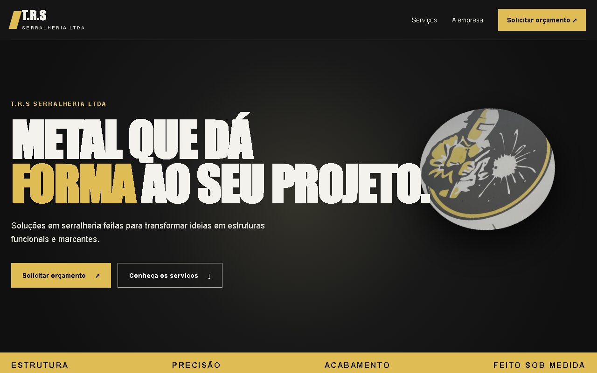

CAPTURA DO PROTÓTIPO · NÃO É O SITE OFICIALTRS Serralheria
Uma apresentação digital para explorar serviços, hierarquia visual e navegação em uma landing page conceitual.
Por dentro do projeto
Desafio
Explorar como organizar serviços de serralheria em uma página de leitura direta e navegação simples.
Solução desenvolvida
Seções de serviços, apresentação e contato, layout responsivo e animações com IntersectionObserver que respeitam movimento reduzido.
Aprendizados e prática
Hierarquia visual, organização por âncoras e equilíbrio entre movimento e acessibilidade.
Estágio atual
Protótipo frontend. Canal de contato pendente e conteúdo comercial a confirmar; não representa uma entrega oficial para a empresa.